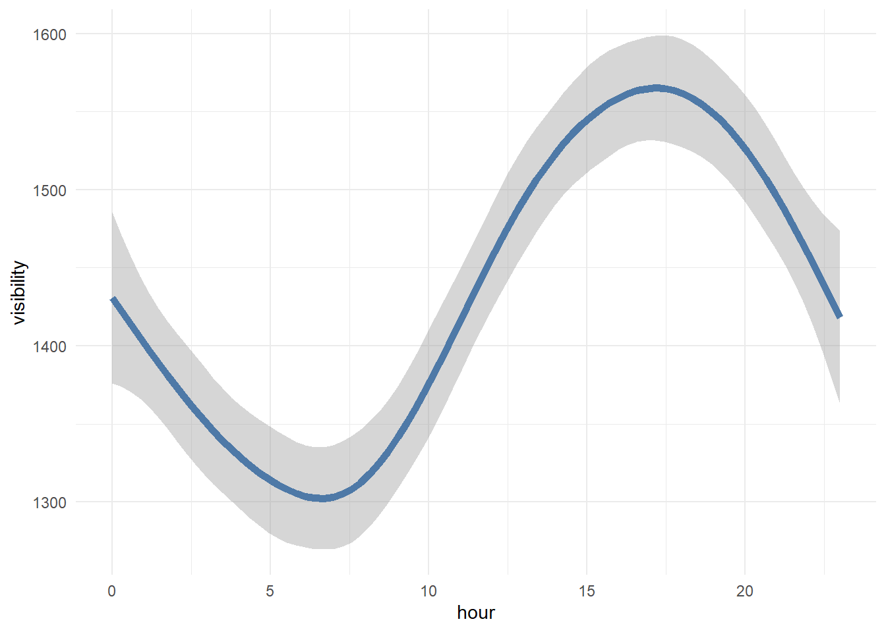

Im Folgenden sollen Fahrradausleihungen vorhergesagt werden. Gegenstand der Analysen ist ein Datensatz, der unter anderem Wetterdaten, Auskunft über das Datum und die Uhrzeit und die Anzahl der täglich geliehenen Fahrräder zu jeder Stunde enthält. Zunächst soll ein Überblick über den Datensatz und die Wechselwirkungen der Variablen untereinander verschafft werden. Im zweiten Teil werden Modelle mit einigen Vorverarbeitungsschritten trainiert, um dann im letzten Schritt die Vorhersagedatei zu erstellen. Als Framework für die Modellierung wird Tidymodels verwendet.
Vorbereitung
Pakete laden
library(ggcorrplot)
Loading required package: ggplot2
Warning: package 'ggplot2' was built under R version 4.2.3
library(easystats)
# Attaching packages: easystats 0.6.0 (red = needs update)
✔ bayestestR 0.13.1 ✔ correlation 0.8.4
✖ datawizard 0.7.1 ✖ effectsize 0.8.3
✖ insight 0.19.2 ✔ modelbased 0.8.6
✖ performance 0.10.3 ✖ parameters 0.21.1
✔ report 0.5.7 ✖ see 0.7.5
Restart the R-Session and update packages in red with `easystats::easystats_update()`.
library(tidymodels)
Warning: package 'tidymodels' was built under R version 4.2.3
Warning: package 'tidytext' was built under R version 4.2.3
library(ggthemes)library(ggplot2)library(GGally)
Warning: package 'GGally' was built under R version 4.2.3
Registered S3 method overwritten by 'GGally':
method from
+.gg ggplot2
library(lubridate)
Warning: package 'lubridate' was built under R version 4.2.3
Attaching package: 'lubridate'
The following objects are masked from 'package:base':
date, intersect, setdiff, union
library(xgboost)
Warning: package 'xgboost' was built under R version 4.2.3
Attaching package: 'xgboost'
The following object is masked from 'package:dplyr':
slice
library(Cubist)
Warning: package 'Cubist' was built under R version 4.2.3
Loading required package: lattice
library(rules)
Warning: package 'rules' was built under R version 4.2.3
Attaching package: 'rules'
The following object is masked from 'package:dials':
max_rules
library(caret)
Warning: package 'caret' was built under R version 4.2.3
Attaching package: 'caret'
The following objects are masked from 'package:yardstick':
precision, recall, sensitivity, specificity
The following object is masked from 'package:purrr':
lift
The following object is masked from 'package:parameters':
compare_models
library(vip)
Warning: package 'vip' was built under R version 4.2.3
Attaching package: 'vip'
The following object is masked from 'package:utils':
vi
Rows: 2192 Columns: 13
── Column specification ────────────────────────────────────────────────────────
Delimiter: ","
chr (4): date, season, holiday, func
dbl (9): hour, temp, humidity, windspeed, visibility, dewpointtemp, solar, r...
ℹ Use `spec()` to retrieve the full column specification for this data.
ℹ Specify the column types or set `show_col_types = FALSE` to quiet this message.
Rows: 6568 Columns: 14
── Column specification ────────────────────────────────────────────────────────
Delimiter: ","
chr (4): date, season, holiday, func
dbl (10): count, hour, temp, humidity, windspeed, visibility, dewpointtemp, ...
ℹ Use `spec()` to retrieve the full column specification for this data.
ℹ Specify the column types or set `show_col_types = FALSE` to quiet this message.
`geom_smooth()` using method = 'gam' and formula = 'y ~ s(x, bs = "cs")'

Zentrale Befunde
Es gibt keine fehlenden Werte, Extremwerte sind auch äußerst rar. Durch die explorativen Datenanalyse ist deutlich zu erkennen, dass die Ausleihungen nach Jahres- und Uhrzeit stark variieren. Außerdem sind die Ausleihungen an Arbeitstagen höher. Bei nicht funktionalen Tagen finden keine Ausleihungen statt. Diese Beobachtung gilt es für die Vorhersagen im Hinterkopf zu behalten. Außerdem haben die Wettervariablen ihre Hoch- oder Tiefpunkte zu ungefähr derselben Uhrzeit, zu der auch am meisten Fahrräder geliehen werden.
Das Hauptaugenmerk bei den Rezepten liegt auf der Datumsspalte und den Interaktionen. Nach der Umwandlung in ein Datumsformat können mit step_date() einige interessante Features extrahiert werden. Außerdem gibt es einige interessante Interaktionseffekte. Die folgenden zwei Rezepte liefern die besten Vorhersagen und unterscheiden sich nur hinsichtlich der Normalisierung der Prädiktoren:
rec72 <-recipe(count ~., data = bikeshare_train1) %>%step_mutate(date = lubridate::dmy(date)) %>%step_date(date, features =c("dow", "doy", "week"), keep_original_cols =FALSE) %>%step_mutate(date_dow =as.numeric(date_dow),date_week =as.numeric(date_week)) %>%step_normalize(all_numeric_predictors(), -c(hour, date_doy, date_dow, date_week)) %>%step_dummy(all_nominal_predictors()) %>%step_interact(terms =~starts_with("holiday"):hour, role ="predictor") %>%step_interact(terms =~starts_with("holiday"):humidity, role ="predictor") %>%step_interact(terms =~starts_with("holiday"):rain, role ="predictor") %>%step_interact(terms =~starts_with("holiday"):date_dow, role ="predictor") %>%step_interact(terms =~starts_with("func"):temp, role ="predictor")
rec81 <-recipe(count ~., data = bikeshare_train1) %>%step_mutate(date = lubridate::dmy(date)) %>%step_date(date, features =c("dow", "doy", "week"), keep_original_cols =FALSE) %>%step_mutate(date_dow =as.numeric(date_dow),date_week =as.numeric(date_week)) %>%step_dummy(all_nominal_predictors())%>%step_interact(terms =~starts_with("holiday"):hour, role ="predictor") %>%step_interact(terms =~starts_with("holiday"):humidity, role ="predictor") %>%step_interact(terms =~starts_with("holiday"):rain, role ="predictor") %>%step_interact(terms =~starts_with("holiday"):date_dow, role ="predictor") %>%step_interact(terms =~starts_with("func"):temp, role ="predictor")
Modelle
Es werden zwei starke Modelle berechnet, ein XGboost und ein Cubist. Die Wahl der Modellarten basiert hauptsächlich auf persönlichen Präferenzen. Es wird außerdem fünffache Kreuzvalidierung mit drei Wiederholungen verwendet.
Bei der Vorhersage ist zu beachten, dass es im Train-Sample keine Ausleihungen an funktionalen Tagen gab. Es ist eine vernünftige Annahme, dass dies im Test-Sample wahrscheinlich genauso sein wird. Daher werden manuell alle Vorhersagen für nicht funktionale Tage auf null gesetzt.